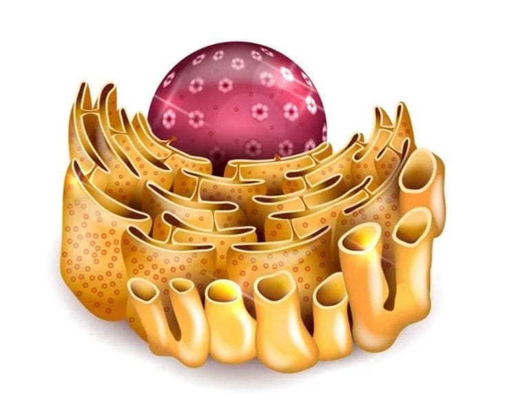
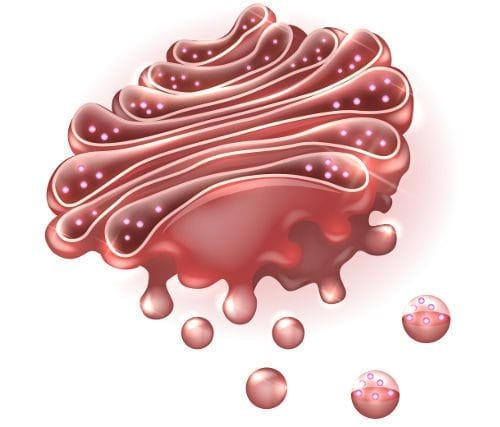

Retículo Endoplasmático
O retículo endoplasmático (RE) é uma organela membranosa presente em todas as células eucariontes, incluindo as células vegetais. Ele é dividido em duas regiões principais: o retículo endoplasmático rugoso (RER) e o retículo endoplasmático liso (REL). Retículo Endoplasmático Rugoso (RER): Caracteriza-se pela presença de ribossomos aderidos à sua superfície, o que lhe confere uma aparência rugosa. O RER está envolvido na síntese de proteínas, que são posteriormente transportadas para outras partes da célula ou secretadas para fora dela. Retículo Endoplasmático Liso (REL): Não possui ribossomos aderidos e está envolvido na síntese de lipídios, metabolismo de carboidratos, desintoxicação de drogas e armazenamento de íons cálcio.
Complexo de Golgi
O complexo de Golgi, também conhecido como aparelho de Golgi, é uma organela composta por uma série de sacos membranosos achatados chamados cisternas. Ele desempenha um papel crucial na modificação, empacotamento e distribuição de proteínas e lipídios que são sintetizados no retículo endoplasmático. Função: O complexo de Golgi modifica proteínas e lipídios recebidos do retículo endoplasmático, adicionando grupos de carboidratos (glicosilação) ou fosfatos (fosforilação). Após a modificação, essas moléculas são empacotadas em vesículas e direcionadas para seus destinos finais, que podem ser outras partes da célula ou o exterior da célula. Estrutura: O complexo de Golgi possui uma face cis, que recebe vesículas do retículo endoplasmático, e uma face trans, que envia vesículas modificadas para seus destinos finais.